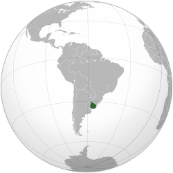
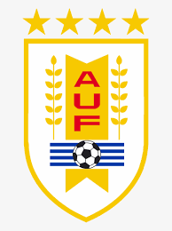

Uruguay, cuyo nombre oficial es República Oriental del Uruguay, es un país soberano de América del Sur,
situado en la parte oriental del Cono Sur. Su capital y ciudad más poblada es Montevideo. Abarca 176 215 km² y es
el segundo país más pequeño de Sudamérica. Según los datos del último censo del INE en 2011, la población
de Uruguay es de 3 286 314 habitantes,8 con lo que figura en la décima posición entre los doce países
sudamericanos.
Clima y Recursos
Tiene clima templado con una temperatura media de 17,5 °C, siendo enero el mes más cálido, con una media de 22,6
°C, y julio el mes más frío, con una media de 10,6 °C.18 Las lluvias son abundantes y varían de los casi
1000 mm por año en el sur a los 1500 mm en el norte, en la frontera con Brasil. Las precipitaciones tienen también
variaciones estacionales, siendo los meses de otoño y primavera los que registran precipitaciones más abundantes.
Los principales recursos económicos son la agricultura, la forestación y la ganadería. Los recursos
minerales y energéticos son escasos, y las principales industrias son las del papel, el cartón, el cemento y la
refinería de petróleo.
Según las Naciones Unidas, es el país de América Latina con el nivel de alfabetización más alto. Según la
organización Transparencia Internacional, Uruguay ocupa el lugar 21 en la lista de países con menor Índice de
Percepción de Corrupción siendo el segundo mejor ubicado de América, por detrás de Canadá, que ocupa el lugar 11.
La Corporación Latinobarómetro, en un estudio realizado en 2008, lo sitúa como el país más pacífico de América
Latina.2627 Además, según la revista estadounidense International Living es el mejor de Latinoamérica para
vivir.
Bandera
Turismo
Uruguay tiene varios destinos turísticos entre los que se destacan las costas sobre el Río de la Plata y el
Oceano Atlántico.
Existe también el turismo de sierras y campo, principalmente las Sierras de Minas y diversas estancias turísticas
que muestran las
tradiciones del habitante rural del Uruguay.
Si desea recibir más información sobre ofertas turísticas en Uruguay, llene los siguientes datos
Estructura política
La República Oriental del Uruguay es un Estado unitario democrático y descentralizado de carácter
presidencialista.
Según un informe publicado por la revista británica The Economist (El Economista), Uruguay es considerado el país
más plenamente democrático de Sudamérica, ubicado en el puesto 15 sobre un total de 167 naciones, siendo el más
democrático de Latinoamérica. Y, además, es el segundo de América -por detrás de Canadá- en la tabla de los
países con menor índice de percepción de corrupción (elaborado por la organización Transparencia Internacional).
Su gobierno se divide en tres poderes independientes: Poder Ejecutivo, Poder Legislativo y Poder Judicial.
Además, existen de tres organismos públicos autónomos de control: la Corte Electoral, el Tribunal de lo
Contencioso Administrativo y el Tribunal de Cuentas de la República.
Geografía
Tiene una superficie terrestre total de 176 215 km²,2 de la que 175 015 km² es la suma total de los
departamentos, 1200 km² comprende la suma de los lagos artificiales del río Negro, 105 km² de las islas
del río Uruguay y 16 799 km² de aguas jurisdiccionales (río Uruguay, río de la Plata y laguna Merín).

Los principales límites geográficos de Uruguay son:
Norte y Este, con Brasil
Oeste, con Argentina
Sur, con el Océano Atlántico
Futbol !!
El fútbol en Uruguay es por amplio margen el deporte más popular y es reconocido como un «país futbolizado»
porque forma parte de su identidad nacional.
Es practicado tanto a nivel profesional como aficionado, desde niños (baby fútbol) hasta veteranos. Actualmente
el fútbol uruguayo de mayores está organizado por la Asociación Uruguaya de Fútbol (AUF), fundada el 30 de marzo
de 1900, tanto en la rama masculina como femenina
Se estima que existen en Uruguay unos 160 mil futbolistas, de los cuales el 6,5% son mujeres. El estilo de
juego aplicado tradicionalmente por los futbolistas uruguayos es denominado «garra charrúa», de carácter
individual improvisado.
La Selección de fútbol de Uruguay ha obtenido dos Campeonatos Mundiales en 1930 y 1950, las medallas de oro
conseguidas en los Juegos Olímpicos de 1924 y en 1928, asi como 15 ediciones de la Copa América
Este profuso palmarés contrasta con la escasa población del país (3,5 millones de habitantes).
Los dos grandes equipos, el Club Atlético Peñarol y el Club Nacional de Football ganaron en total ocho ediciones
de la Copa Libertadores y seis de la Copa Intercontinental.
El Estadio Centenario que fue sede de la Copa Mundial de Fútbol de 1930 fue reconocido por la FIFA como Monumento
Histórico del Fútbol Mundial.
Principales logros de la Selección de Uruguay:
